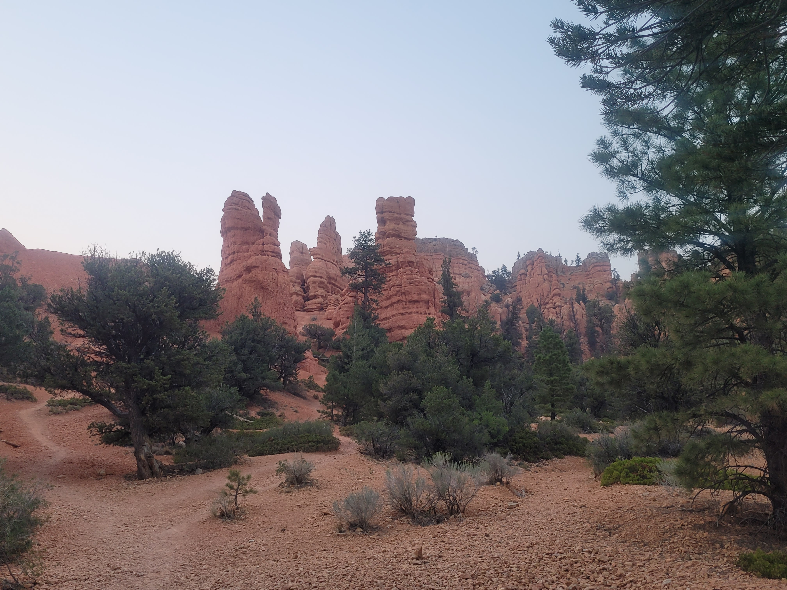
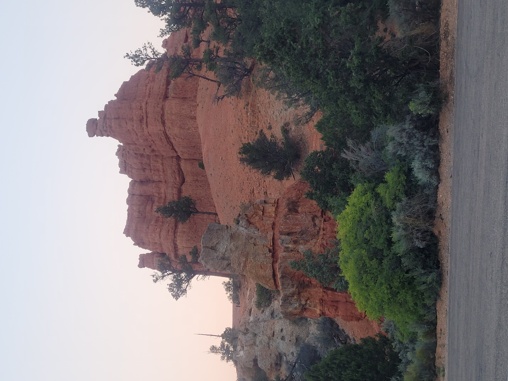
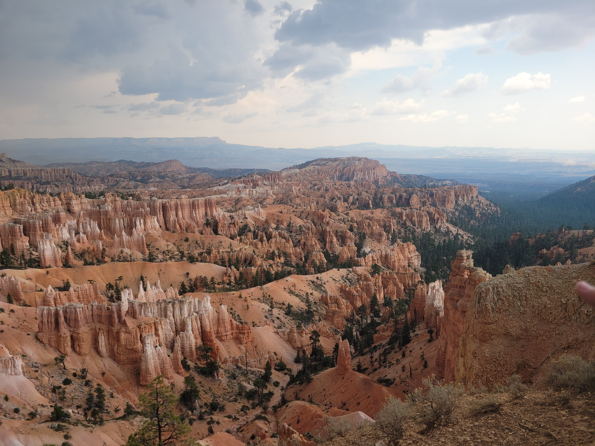
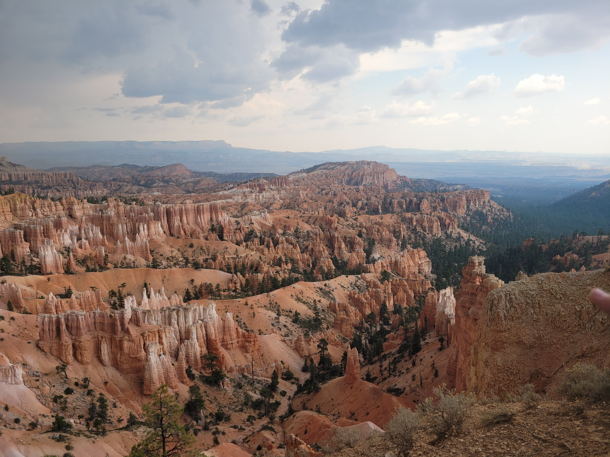

In February of 2021, my family-- Darryn (my partner) and Miles (my wonderful son)-- moved from Portland, OR to St. Louis, MO (where I am originally from). However, we left our truck and some belongings back in Portland for the time being. Due to the weather conditions in February-- it was freezing cold, snowy and we were practically racing a blizzard-- we really didn't get a chance to do any sight seeing along our drive. Bummer!! So...We decided that when we went back for our truck, we would make a trip of it!
That summer, we flew back to Portland to pickup our Chevy Avalanche and camping gear, and so began, our two week trek across the country. Our road trip from Portland, OR to St. Louis, MO included a grand adventure through Utah. We explored Northern Utah-- covering multiple attractions: Bryce Canyon, The Arches, Red Canyon, CapitolReef, and so much more!... Each location was a sight to see.
Some of Our Favorite Places:
Bryce Canyon National Park
Did you know that Bryce Canyon has the largest concentration of hoodoos in the world? I bet you are wondering what a hoodoo is, aren't you? A hoodoo is an irregular column of rock that has been shaped through erosion over millions of years. Pretty neat, huh? And if you are into mythology, or Marvel comics/movies, then you may be interested to know that there is a rock formation at Bryce Canyon that is referred to as Thor's Hammer. The pictures don't quite do it justice, but in person, you definitely can understand how it got its name.
Scenic Byway 12
Scenic Byway 12 (aka "A Journey Through Time Scenic Byway") was a beautiful drive through the natural rock formations of Utah. Leading up to this journey, we had never even heard of it before, but we soon came to learn of its majestic-ness. Hoping on Byway 12 brought us to many stops we never intended to adventure -- such as Capitol Reef and Red Canyon-- and added so much to our trip. I can't even imagine NOT taking this drive, and I highly suggest if you ever find yourself with the option to travel it, please do... You won't regret it!
Red Canyon National Park
Red Canyon National Park, located in the Dixie National Forest, was right off Byway 12-- literally! We pulled off the road as we were driving by a hiking trail leading into the Red Canyons. We decided it was a good chance to stretch our legs, so we got out, crossed the road and followed the trail into the Canyons. A small little adventure that makes up a part of a grand one.




Capitol Reef National Park
Another beautiful National Park we found off the Scenic Byway 12 was Capitol Reef National Park. We stopped multiple times in Capitol Reef in order to take in everything it had to offer. We got to see the Petroglyphs that were etched in sandstone over 1,000 years ago. We pulled off the side of the road and hiked upto Hickman Natural Bridge as well. This was a crazy one, because we had to race a storm rolling in on the way back down. Lastly, we got to stop by Chimney Rock for a little afternoon lunch. It was a great place to stretch our legs and enjoy some sandwiches before getting back on the road.


 
